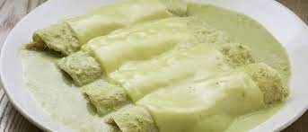

Tacos de barbacoa de lengua de res

Descripción
Una "enchilada" es una tortilla enrollada con relleno dentro, cubierta con una salsa picante.
Las enchiladas verdes se pueden rellenar con una variedad de ingredientes, que incluyen
frijoles, verduras, queso, carne de res, cerdo, pollo, mariscos o diversas combinaciones.
La diferencia entre las Enchiladas Verdes Suizas y el resto de enchiladas es que estas se
cubren con una salsa de crema y queso suizo y luego se hornean. Las más famosas en Mexico
son las Enchiladas Suizas Sanborns, del restaurante del mismo nombre.
Ingredientes
- 2 tazas y media de salsa verde
- Media taza de crema ácida
- Media taza de cilantro picado
- 2 tazas de pollo cocido deshebrado
- 1 taza que algún queso que gratine (rayado)
- 12 tortillas de maíz
- Media cebolla mediana cortada en rodajas finas
- 2 cucharadas de aceite vegetal
Pasos
- Coloca la salsa verde, la crema mexicana y el cilantro en una licuadora, procesa hasta
que tengas una salsa muy cremosa.
- Calienta en una sartén a fuego medio, el aceite y sumerja las tortillas de una en una en
el aceite para ablandarlas, dándole solo unos segundos por cada lado. Además de
suavizarlas para facilitar enrollarlas, otra de las razones por las que hacemos esto es
evitar que las tortillas se rompan. Yo prefiero usar una brochita de cocina para barnizar
con aceite las tortillas y luego calentarlas en una sartén para usar menos aceite.
Transfiéralas a un plato cubierto con toallas de papel para drenar el exceso de aceite.
Precalienta el horno a 350 ° F.
- Sazona el pollo con sal y pimienta. También puedes agregar ajo en polvo si lo deseas.
- Llena el centro de cada tortilla con el pollo y enrolla la tortilla.
- Esparce ⅓ de salsa en un molde para hornear de 9 ".
- Divida el pollo desmenuzado en partes iguales entre las tortillas, enrolla y coloca las
enchiladas en 1 sola capa, con la orilla de la tortilla hacia abajo.
- Cubra con el resto de la salsa; espolvorea con queso. Hornea por 30 minutos o hasta que
el queso comience a derretirse y y comience a dorarse. Sirva inmediatamente